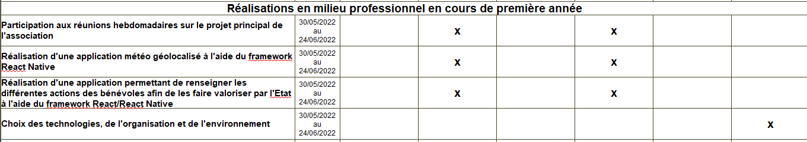
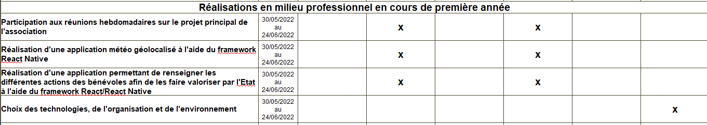

Stage 1ère année BTS SIO
Le comité d'oise de Handball
Le comité de l'oise de Handball est une association sportive affilié à la Fédération Française de Handball qui a pour oeuvre de promouvoir le handaball dans le département de l'Oise
Cette association est composé de joueurs, arbitres, bénévoles, entraineurs et réalise de nombreuses formations et compétitions dans le but de développer l'attrait pour ce sport.
Ils possèdent donc leurs propre service informatique contenant les bases de données des adhérents, bénévoles et autre.
Les réalisations pendant le stage
 

Réunion hebdomadaire
Pour cette réalisation nous réalisions chaque vendredi une réunion teams présentant nos avancées au directeur de l'association, nous permettant de savoir donc ce qui est approuvé ou à revoirApplication météo géolocalisé
Afin de rejoindre le projet principal et me former sur le framework React Native le service informatique du comité m'a fait réaliser une application météo géolocalisé afin de sélectionner une ville et récupérer les informations par une API.Mise en place des différents outils
Rassemblement avec l'équipe du service informatique afin de s'organiser sur le projet de l'association ainsi que le choix des technologies comme les langages de programmationMise en place d'une méthode agile à l'aide de la méthode Scrum, permettant à chacun de savoir ce qu'il doit réaliser.
Il a été décidé de réaliser le coté back-end avec Laravel et le coté front-end avec React et React Native
React : Framework Javascript open-source, flexible et facile à apprendre.
Laravel : Framework PHP open-source, contenant une architecture MVC ainsi que des fonctionnalités de sécurité intégrées.
Projet principal
Le projet principal de ce stage était de réaliser une application permettant à un bénévole de rentrer les différentes actions comme ses déplacements ou différentes actions au sein de l'association afin de se faire rembourser.L'application a pour but un système de connexion, d'inscription renseigné dans une base de donnée, un formulaire permettant de renseigner les différentes actions calculant le montant de remboursement dû.
J'ai été mis en charge de réaliser la base de donnée, le système de connexion ainsi que mettre en place le design de l'application